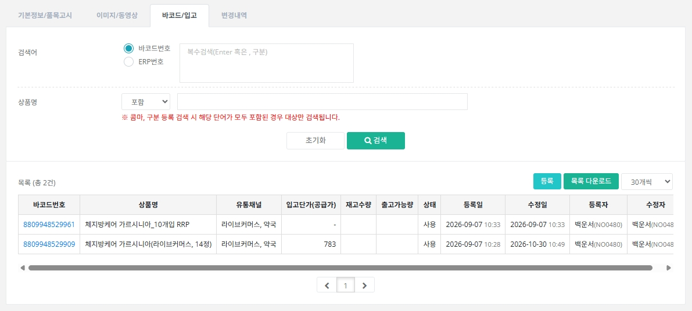
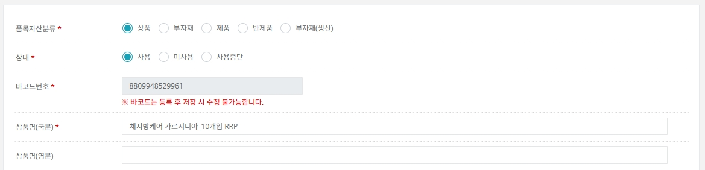
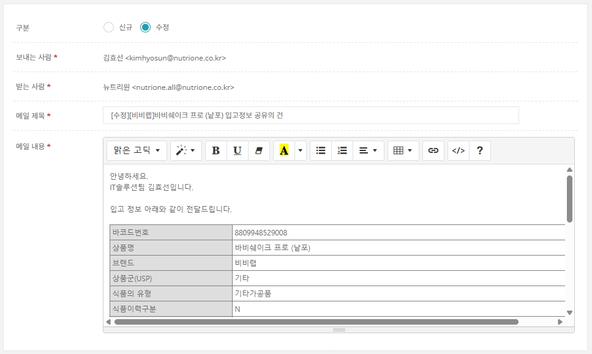

03. 품목 관리 - 바코드
바코드 등록 화면 사용법
품목 아래에 바코드를 등록하는 화면입니다. ERP 등록은 바코드를 기준으로 하기 때문에, 바코드가 없으면 ERP 번호를 만들 수 없습니다.
이 페이지에서 확인할 내용
- 바코드 목록 보기
- 바코드 등록·저장
- 입고 메일 발송
- 자주 하는 실수
1 바코드 목록 보기
품목 상세의 [바코드/입고] 탭에서 해당 품목 하위에 등록된 바코드만 검색·조회합니다. 다른 품목의 바코드는 [품목관리]에서 조회하세요.

바코드번호를 클릭하면 바코드 상세, [등록]을 클릭하면 새 바코드 등록 화면이 열립니다.
2 바코드 등록·저장
바코드는 저장 후 수정이 불가합니다.
- 바코드는 중복 등록이 불가하고, 등록 후에는 고칠 수 없습니다. 상품 바코드는 상품본부가 품목 등록 후 등록하므로 등록 여부는 상품본부와 확인하세요.
- 실물 바코드가 아닌 출고용 임의 바코드가 필요하면 영업관리와 확인한 뒤, 규칙에 따라 아래 품목번호를 검색해 직접 등록합니다.
뉴트리원-상품 1100001 / 뉴트리원-부자재 1100271 / 뉴트리원-부자재(상품) 제관 1600001 / 딥런-상품 2300001 / 딥런-부자재 2300006 / 상품본부 제조 관련 품목 1100808

바코드번호 옆 [중복확인]으로 먼저 확인합니다. 하단 버튼: 취소 / 품목정보 보기 / ERP번호 생성요청 / 저장 / 메일발송
| 품목자산분류 먼저 선택 | 품목자산분류(상품 / 부자재 / 원료)에 따라 아래 등록 항목이 달라집니다. 반드시 분류를 먼저 선택한 뒤 나머지 항목을 등록하세요. |
|---|
| 필수 입력(*) | 품목자산분류, 바코드번호, 상품명, 제조사. 이 항목만 채우면 저장할 수 있고, 바코드는 [중복확인] 후 중복되지 않은 번호만 생성됩니다. |
|---|
| 선택 입력 | 필수 외 항목은 선택 입력입니다. |
|---|
| 해외 수출 정보 | 상품명(영문), 카톤입수부터 파레트 높이까지의 항목은 해외 수출 기준에 중요한 정보입니다. 정확하게 등록해 주세요. |
|---|
| [품목정보 보기] | 바코드 등록 후 상세에 나타나며, 클릭하면 상위 품목 상세 팝업으로 연결됩니다. |
|---|
| [ERP번호 생성요청] | 바코드 등록 후 상세에 나타나며, 클릭하면 ERP 생성요청 팝업으로 연결됩니다. (→ ERP 관리 참고) |
|---|
3 입고 메일 발송
카톤입수부터 파레트 적재단수까지의 정보 중 하나라도 수정하면 입고 메일 양식이 자동으로 연결되어 나타나고, 최종 정보 기준으로 내용이 채워집니다.

받는 사람·제목·본문이 자동 입력됩니다. 필요하면 내용을 수정해 [메일발송]을 누릅니다.
Tip. 위 항목을 수정하지 않았는데 메일을 보내고 싶다면, 바코드 상세 팝업의 [메일발송] 버튼을 직접 누르세요.
자주 하는 실수 체크리스트
Q. 바코드를 잘못 입력하고 저장했어요.
저장 후에는 수정이 되지 않으며 삭제 기능도 제공하지 않습니다(ERP와 연관될 수 있음). 저장 전에 [중복확인]과 숫자를 꼭 다시 확인하세요. 삭제가 필요하면 IT솔루션팀에 문의하세요.
Q. 바코드가 저장되지 않아요.
[중복확인]을 거치지 않았거나 이미 있는 번호입니다. 필수 항목(품목자산분류·바코드·상품명·제조사)도 확인하세요.